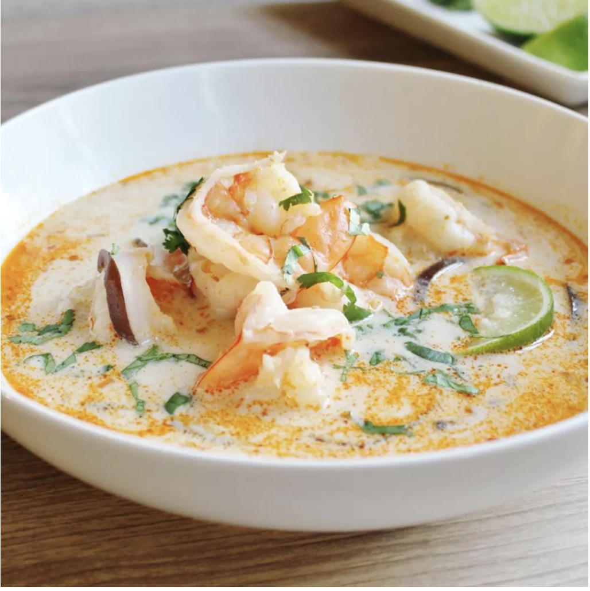

Thai Coconut Soup

This Thai coconut soup is full of authentic, bold, and delicious Thai
flavors. This is the best Thai soup recipe out there — you won't be disappointed
with this one!
Ingredients:
- 1 tbsp vegtable oil
- 2 tbsp grated fresh ginger
- 1 stalk lemon grass [minced]
- 4 cups chicken broth
- 3 tbsp fish sauce
- 3 (13.5 oz) cans cocnut milk
- 1/2 lb fresh shitake mushrooms [sliced]
- 1 lb medium shrimp [peeled and deveined]
- 2 tbsp fresh lime juice
- salt to taste
- 1/4 cup chopped fresh cilantro
Steps:
- Heat oil in a large pot over medium heat. Add ginger,curry paste, and lemongrass; cook and stir in the hot oil for 1 minute.
- Gradually stir in chicken broth, then stir in fish sauce and brown sugar; reduce heat top low and simmer for 15 minutes.
- Add coconut milk and mushrooms; cook and stir until mushrooms are soft, abiut 5 minutes.
- Add shrimp; cook until no longer translucent, about 5 minutes. Stir in lime juice season with salt and garnish with cilantro.